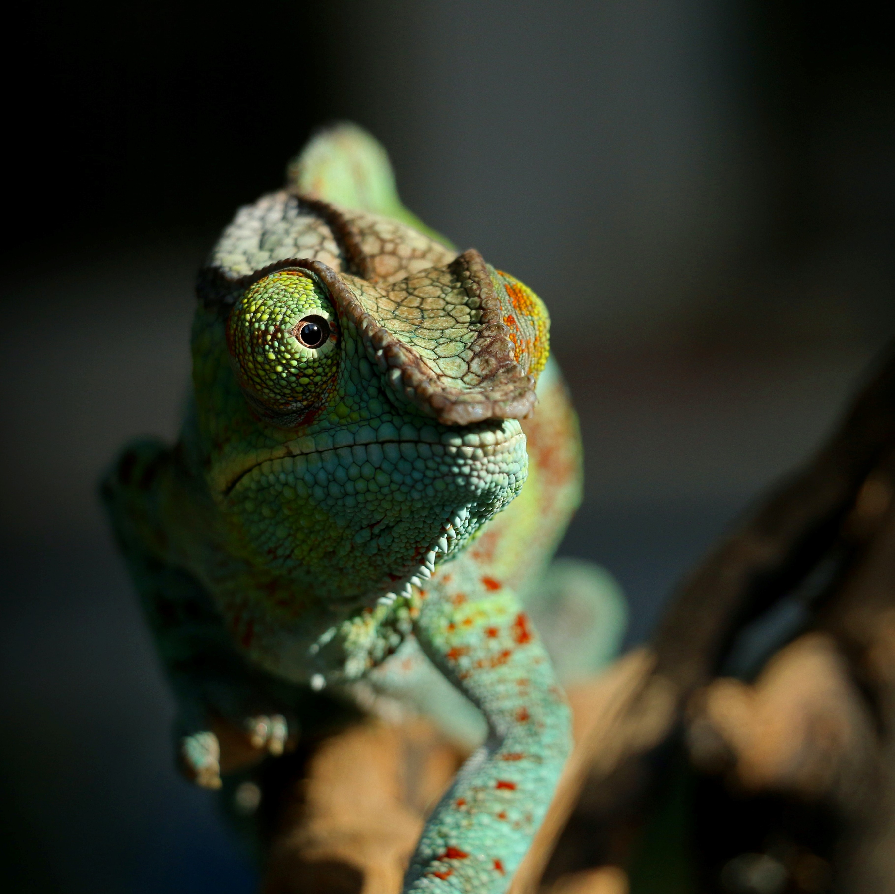

About Me
Hi! I'm Aaron and I'm an up and coming fullstack web developer who is passionate about problem solving and learning new things.
I started my coding journey this past September and in that time, I've taught myself HTML, CSS, and JavaScript. My next goal is to learn React and then start learning about backend web development. Thank you for checking out my website!